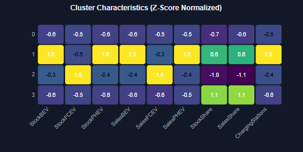

Advanced Analysis Panel
Purpose: To apply statistical and machine learning models to a user-selected subset of data to uncover patterns, trends, and structural relationships.
This panel transforms visual observations from the scatter plot into quantitative explanations. It functions as the "brain" of the dashboard, running on-demand analyses.

Components and Features
The panel is activated by clicking the "Run EV Adoption Analysis" button and operates on the points selected in the Diagnostic Scatter Plot. It generates the following analyses:
-
Clustering Analysis (K-Means):
- What it does: Groups the selected regions/modes into distinct adoption profiles based on their latest EV metrics.
- Visualization: A heatmap displays the average characteristics of each cluster. More intense colors indicate higher values for that metric.
- Insights: Identifies archetypes like "Established Leaders," "Fast-Emerging Markets," or "Laggards."
-
Regression Analysis (Trends):
- What it does: Applies linear regression to the historical data of the top-performing regions for a specific metric (default is
SalesBEV). - Visualization: A line chart shows historical data (solid lines) and a 3-year forecast (dashed lines).
- Insights: Quantifies the "adoption speed" (growth per year) and predicts short-term performance.
- What it does: Applies linear regression to the historical data of the top-performing regions for a specific metric (default is
-
Correlation Analysis:
- What it does: Calculates the Pearson correlation matrix between all key metrics for the selected data subset.
- Visualization: A heatmap shows the strength and direction of the relationships. Red indicates a strong positive correlation, while blue indicates a strong negative correlation.
- Insights: Answers questions like: Is the growth in chargers strongly correlated with the growth in BEV sales?
Implementation Walkthrough
The panel is built around a central function, run_full_analysis, which is triggered by a button click. This function orchestrates several smaller analytical functions.
Step 1: Core Analytical Functions
Three main functions form the backbone of the analysis. Each function takes a DataFrame of selected data and performs a specific task.
# 1. Clustering Function
# Groups regions into profiles based on their latest EV metrics.
def cluster_regions_by_ev_profile(df_latest, n_clusters=4):
# ... uses scikit-learn's KMeans ...
return df_latest_with_clusters, cluster_stats, quality_metrics
# 2. Regression Function
# Calculates growth trends and forecasts for a given metric.
def predict_ev_trends(df_wide, selection_ids, metric='SalesBEV', top_n=5):
# ... uses scikit-learn's LinearRegression ...
return results_dataframe
# 3. Correlation Function
# Computes the correlation matrix for key EV metrics.
def analyze_ev_correlations(df_latest):
# ... uses pandas .corr() method ...
return correlation_matrix
Step 2: Creating the User Interface
The user interface consists of a button to trigger the analysis and an output area where the results will be displayed.
import ipywidgets as widgets
from IPython.display import display, HTML
# Create the button that the user will click
button = widgets.Button(
description='Run EV Adoption Analysis',
button_style='success',
icon='car',
layout=widgets.Layout(width='300px')
)
# Create the output widget to hold the results
output_ml = widgets.Output()
Step 3: The Orchestrator Function
This function ties everything together. It is set up to run whenever the button is clicked. It grabs the selection from the main scatter plot (w) and passes it to the analytical functions.
def run_full_analysis(b):
with output_ml:
output_ml.clear_output() # Clear previous results
# 1. Get the current selection from the scatter plot
selection_keys = w.selection.get('keys', [])
df_selected = wide[wide['id'].isin(selection_keys)] if selection_keys else wide
# 2. Run Clustering
df_latest, _ = get_latest_year_data(df_selected)
clusters_df, cluster_stats, quality = cluster_regions_by_ev_profile(df_latest, ...)
# ... display clustering results and heatmap ...
# 3. Run Regression
predict_ev_trends(df_selected, ...)
# ... display trend chart and insights ...
# 4. Run Correlation
analyze_ev_correlations(df_latest)
# ... display correlation heatmap ...
# Link the button click to the orchestrator function
button.on_click(run_full_analysis)
Step 4: Display the Panel
Finally, the button and output area are displayed together, ready for user interaction.
display(widgets.VBox([
widgets.HTML("<h3>EV Adoption Analysis Panel</h3>"),
button,
output_ml
]))
This Analytical Panel Can Help Us Show Some Insights
- Are there fundamentally different EV adoption profiles among the regions I have selected?
- What is the expected annual growth rate for BEV sales in the leading markets?
- Which metrics are most strongly interconnected, suggesting cause-and-effect relationships?